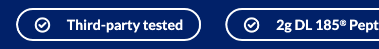
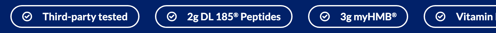

Platter component
Marquee Bar
Transcribed from Confluence, authored by Sarah Lee. The page was titled "FSD: Trust Strip" until 2026-09-11, when it was renamed to match the Figma layer; its body still says "trust strip" once, in the User requirement. It is the client's spec, reproduced verbatim in substance. Where our implementation deviates it is recorded under Deviations, not by editing the spec.
Spec: https://getplatter.atlassian.net/wiki/spaces/TVS/pages/941260848/FSD+Marquee+Bar
02 — Screenshots
How it renders
Wipe the handle across the design to find where the build drifts from it. The Figma frame and the capture are exported at the same width, so anything that moves under the handle is a real difference. Every width is below as a plain capture.


03 — Fields
What a merchandiser fills in
Generated from _schema.ts, in the order Amplience shows them.
| Field | Type | Constraints | Description | |
|---|---|---|---|---|
highlightsItems |
array | required | Between three and five items, shown in the order you list them here and repeated as they scroll, so the bar is always full however few you add. Drag a row to reorder it. This list is written by hand — nothing here is pulled from the product feed. | |
scrollSpeedScroll speed |
string | slow · medium · fastdefault "medium" |
How fast the items travel across the bar. Medium is the design default. Slow moves 24 pixels a second, Medium 40 and Fast 64 — measured as distance rather than time, so the speed looks the same whether you add three items or five. Visitors whose device asks for reduced motion see the bar standing still whatever you pick. | |
backgroundColorBackground colour |
string | The colour of the whole bar. Navy #012169 is the design; leave empty to keep it. A hex typed without its # (012169) is read as #012169. Check it against the text colour below: the two are not checked for you, and a pale background under the white text leaves the labels unreadable and fails the accessibility standard this page is held to. | ||
textColorText colour |
string | The colour of the labels, the pill outlines and the default check mark — one choice for the whole bar. White #ffffff is the design; leave empty to keep it. Uploaded icons are drawn as they are and are not affected. Change this only together with the background, and only to a pair with strong contrast. | ||
sectionIdSection ID |
string | max 50^[a-z][a-z0-9-]*$ |
A name for this specific module, used for two things. A link anywhere on the site can jump straight to it by ending the URL with # and this name, e.g. #product-claims. Page-level CSS can also target this one module rather than every Marquee Bar. Use lowercase letters, numbers and hyphens, start with a letter, and make it unique on the page — two modules sharing an ID will break the jump link. Leave empty if you need neither. |
04 — Sample content
A filled-in example
From _content.json. This is what the screenshots above are rendering.
{
"highlights": [
{
"label": "Third-party tested"
},
{
"label": "2g DL 185® Peptides"
},
{
"label": "3g myHMB®"
},
{
"label": "Vitamin D3"
},
{
"label": "Built for Recovery"
}
],
"scrollSpeed": "medium",
"sectionId": "product-claims"
}05 — Design reference
Design reference
The FSD links the desktop frame. Both frames sit on the consolidated-feedback file's "Template 2" screen (18309:80768, this repo's template 3), directly beneath the hero; a standalone copy of the pair lives in the "Marquee Bar" section 19835:6074 and matches them in every designed value.
| View | Frame | Size |
|---|---|---|
| Section — desktop | Figma 18309:70301 | 1512 × 68 |
| Section — mobile | Figma 18309:69359 | 375 × 49 |
| Standalone copy — desktop | Figma 19835:6265 | 1512 × 68 |
| Standalone copy — mobile | Figma 19835:6295 | 375 × 49 |
Neither frame carries prototype motion, a scroll setting or an annotation. Both draw a static row of seven chips, centred and clipped by the bar at both edges — the motion is specified only in the text below.
Bar
| Desktop | Mobile | |
|---|---|---|
| Background | #012169 (colors/brand colors/dark blue) | same |
| Padding | 16px top and bottom, 48px sides | 8px top and bottom, 16px sides |
| Gap between chips | 48px (spacing/Container Margin Spacing 2) | 24px |
| Height | 68px (hug) | 49px (hug) |
| Overflow | clipped | clipped |
Chip
| Desktop | Mobile | |
|---|---|---|
| Shape | pill, radius 100 | same |
| Border | 2px inside, #ffffff | same |
| Fill | none | none |
| Padding | 4px top and bottom, 16px sides | same |
| Icon → label gap | 16px | 16px |
| Height | 36px (2 + 4 + 24 + 4 + 2) | 33px (2 + 4 + 21 + 4 + 2) |
| Label | Lato Bold 16px / 24px, #ffffff, no wrap | Lato Bold 14px / 21px |
| Icon | check-circle, 16 × 16, 2px #ffffff stroke, round caps and joins | same |
The label is Figma's richtext-md/P1/bold lato, the bold weight of the richtext-p1 pair tailwind.config.js already carries. The icon is the local check-circle component (92:3327, a 24px master) resized to 16px with its stroke held at 2px, so it is heavier than the master scaled down; the markup carries the 16px instance's own path.
No frame is drawn between the two widths, but the bound variables carry a "768-1200" mode, and it splits the values: the label is already 16px (typography/richtext-md/p1), while the gap stays 24px and the vertical padding 8px (spacing/Container Margin Spacing 2, spacing/spacing-s). So the label steps up at md and the spacing at xl, the first Tailwind step past 1200.
The seven labels, in order: "Third-party tested", "Third-party tested", "2g DL 185® Peptides", "3g myHMB®", "Vitamin D3", "Built for Recovery", "Gluten Free". The first is repeated in the file.
06 — User requirement
User requirement
- User can view the trust strip; it is non-interactive (view only).
- Content auto-rotates continuously on both desktop and mobile.
07 — Admin requirement
Admin requirement
| Content Type | Functional Requirement | Character Count | Asset/Copy Requirement | Responsive & Content Behavior |
|---|---|---|---|---|
| Item (Required, 3–5) | Admin adds 3–5 items; each item pairs an icon/logo asset with a short label (e.g., "Third-party tested"). Icon for each card is added individually, as opposed to globally per section. Content is manually entered by the admin, not pulled automatically from product data. Admin can change background color and text color. | 10-30 per item | Icons: SVG | - |
| Autoscroll (Required) | Strip auto-rotates/scrolls continuously. Admin can control the speed in which rotation | - | - | Same auto-rotating behavior on desktop and mobile. Hovering over the strip will stop the movement. |
The Autoscroll row's functional requirement ends mid-sentence in the source ("the speed in which rotation"); it is reproduced as written.
08 — Other requirements
Other requirements
- Analytics: Component supports automated impression tracking (viewport entry) via the standard
raiseEventhandler.
09 — Open comments
Open comments
Scroll direction — answered 2026-09-11
answered 2026-09-11
The spec says the strip "auto-rotates/scrolls continuously" but not which way. Settled as right to left — content enters at the right edge and leaves at the left, the reading direction — with no setting for it.
Speed presets — answered 2026-09-11
answered 2026-09-11
"Admin can control the speed" gives no values. Settled as three presets measured in distance per second rather than time per loop, so a five-item strip does not visibly race a three-item one: Slow 24px/s, Medium 40px/s (the default), Fast 64px/s.
Item count follows the spec, not the design — answered 2026-09-11
answered 2026-09-11
The Admin requirement caps the list at 3–5 items. Both frames draw seven chips, six distinct ("Third-party tested" appears twice). The spec wins: maxItems is 5, and the sample content uses five of the six drawn labels.
How the strip is stopped — answered 2026-09-11
answered 2026-09-11
The spec asks for hover to stop the movement and nothing else. Built: hover stops it, and so does focusing it — by keyboard, or by a tap or click, which focuses the strip too — and it does not move at all under reduced-motion settings. A visible pause/play button was considered and not taken; see Deviations.
Impression tracking has no agreed event — unanswered 2026-09-11
unanswered 2026-09-11
Other requirements asks for automated impression tracking on viewport entry via "the standard raiseEvent handler", but no impression event name for a content module appears in any TVS template or in TVS-Common. The same question is open on every module built so far and should be answered once for all of them.
10 — Deviations
Deviations
Impression tracking is not implemented
Not built
Other requirements asks for "automated impression tracking (viewport entry)". No impression event name exists to call, so nothing ships. This matches every section built so far — impression analytics is an open item across the whole project, and it should be solved once for all modules rather than invented separately in this one.
There is no pause control
Not built
The strip pauses on hover (mouse devices only) and while it has focus, and does not move at all when the visitor's device asks for reduced motion. It is focusable so keyboard users can stop and scroll it, and a tap or a click focuses it as well: on a phone, tapping the strip stops it until the next tap elsewhere, and on desktop a click leaves it paused after the pointer moves off until the visitor clicks elsewhere. That is kept deliberately, as the stop mechanism WCAG 2.2.2 (Pause, Stop, Hide, Level A) asks for on moving content that starts by itself and runs longer than five seconds.
What is not built is a visible pause button, because neither the spec nor the design has one — the call taken on 2026-09-11. The tap stop works but is not announced on screen, so a visitor has to discover it.
The label's lower character bound is not enforced
Built
The spec gives each item 10-30 characters. maxLength is set to 30; there is no minLength beyond the shared 1 that makes the label required. A 10-character floor would reject short, correct claims like "Vegan" or "Non-GMO", and Amplience surfaces a failed minimum as a save error rather than a warning.
The registered mark is raised
Built
Figma sets "2g DL 185® Peptides" and "3g myHMB®" with the ® on the baseline. Every prose field in the library goes through the shared formatting helper, which raises a bare ® into a superscript, so the labels do too. Leaving one section's ® flat would make the same mark render two ways on one page.
The icon is optional and falls back to the design's check
Built
The spec pairs every item with an icon asset. The icon field is optional: left empty, the item draws the design's own check-circle, which follows the text colour. An uploaded icon is drawn exactly as uploaded, so a multicolour logo keeps its colours and does not follow the text colour. The sample content leaves every icon empty, which is what the design shows.
The chip border follows the text colour
Built
The spec offers a background colour and a text colour. The chip outline has no setting of its own: it is drawn in the text colour, which is exactly the design (white text, white outline), and keeps the pair readable whatever colour is chosen.
Reduced motion shows the design's static strip
Built
Under prefers-reduced-motion: reduce the strip does not move and shows one copy of the items. Where they fit the width they sit centred, which is the desktop frame exactly. Where they do not — five items on a phone — the row starts at the left edge and scrolls sideways, rather than centring and clipping at both edges as the mobile frame draws: a still strip clipped at both ends would leave its outer items unreachable by anyone who cannot watch it move.